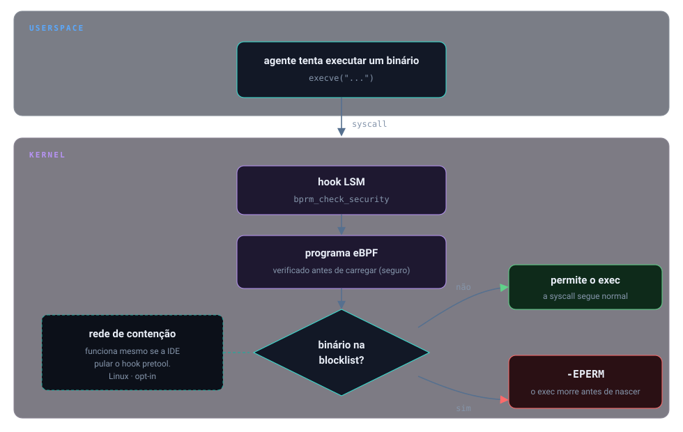
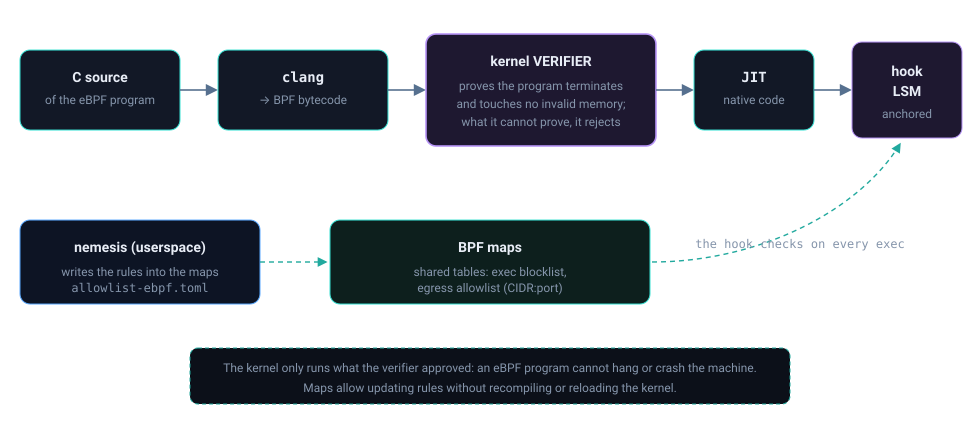

Início/Conceitos/2 · Kernel, eBPF e LSM
conceito 2 · kernel LinuxKernel, eBPF e LSM
Três ângulos do mesmo assunto: o que separa o userspace do kernel e onde o kernel decide se um programa pode executar; o que é o eBPF e por que ele é seguro de carregar no kernel; e como o BPF-LSM me dá o ponto exato para dizer "não".
Quando um programa vai ser executado, o kernel passa por um ponto de verificação chamado bprm_check_security. Um programa eBPF fica pendurado ali: ele olha o nome do binário, confere numa tabela de comandos bloqueados e, se bater, devolve -EPERM, o exec não acontece. eBPF é código que roda dentro do kernel mas passa antes por um verifier que prova que ele não trava nem acessa memória inválida. O LSM (Linux Security Modules) é a moldura de ganchos de segurança do kernel onde essa decisão é encaixada.

bprm_check_security no kernel; o eBPF consulta a tabela e nega com -EPERM.Do zero: userspace, kernel e a syscall
O sistema roda em dois mundos. O userspace é onde vivem os programas comuns; o kernel é o núcleo privilegiado que controla CPU, memória, disco e rede. Um programa não toca o hardware direto: ele faz uma syscall, um pedido formal ao kernel ("execute este binário", "abra este socket"). Executar um programa passa por uma syscall da família execve, e dentro do kernel esse caminho cruza o gancho bprm_check_security (de binary parameters): o último ponto onde a política de segurança pode aprovar ou vetar o exec antes de a imagem do novo programa assumir.
Por que importa
O hook do userspace (o exit 2) depende de a IDE chamar o hook. Se o pretool está desconectado, ou se o agente arruma um jeito de executar algo por fora, o userspace não vê. O kernel vê tudo: nenhum processo executa sem passar pelo bprm_check_security. Daí a necessidade de uma decisão lá embaixo: uma rede de segurança que não depende da cooperação da IDE.
Como se correlaciona
eBPF, verifier e LSM se encaixam assim: o LSM oferece os ganchos (onde decidir); o eBPF é a tecnologia que permite carregar lógica nesses ganchos sem recompilar o kernel; e o verifier é o que torna isso aceitável, ele prova, antes de carregar, que o programa termina e não corrompe nada. Por isso os loops são de tamanho fixo com #pragma unroll e os caminhos são limitados: é o que o verifier exige. As estruturas de dados ligadas a esse programa são mapas BPF, de vários tipos conforme a necessidade.

Como o Nemesis aplica
O programa declara os mapas que usa: uma tabela hash com os comandos bloqueados, um ring buffer para emitir eventos ao userspace, e tries LPM para a allowlist de egress (detalhadas no grupo 3).
📄 .nemesis/ebpf-kernel/ebpf/nemesis-block.bpf.c:20-67 · mapas hash, ringbuf, array e LPM triestruct {
__uint(type, BPF_MAP_TYPE_HASH);
__uint(max_entries, 256);
__type(key, struct command_key);
__type(value, __u8);
} blocked_commands SEC(".maps");
struct {
__uint(type, BPF_MAP_TYPE_RINGBUF);
__uint(max_entries, 1 << 24);
} events SEC(".maps");E o gancho de exec: ele respeita a decisão de um LSM anterior na cadeia (não sobrepõe um ret já tomado), confere se o processo é do agente, lê o basename do binário e, se ele estiver na tabela, devolve -EPERM.
SEC("lsm/bprm_check_security")
int BPF_PROG(nemesis_check_exec, struct linux_binprm *bprm, int ret)
{
if (ret != 0)
return ret; // respeita decisão anterior da cadeia LSM
// ... escopo por cgroup do agente, lê basename ...
blocked = bpf_map_lookup_elem(&blocked_commands, &key);
if (!blocked)
return 0;
return -EPERM; // nega o exec no kernel
}Decisões e limites
O programa nunca sobrepõe uma negação anterior da cadeia LSM: se ret != 0, devolve o próprio ret. Sobrepor isso abriria um buraco em outra política de segurança do sistema. E o alcance é declarado: isto é Linux. No macOS não há eBPF (o análogo seria o Endpoint Security Framework, ainda não construído); lá, sem o pretool, não há backstop de kernel.
O BPF-LSM também precisa estar habilitado no kernel (bpf em /sys/kernel/security/lsm), e o daemon eBPF só é acionado quando o pretool confirma esse suporte.
Auto-checagem
Por que o controle no kernel cobre casos que o hook do userspace não cobre?
Porque toda execução de binário passa pelo bprm_check_security no kernel, independente de a IDE chamar o pretool. É o backstop quando o hook está desconectado.
Para que serve o verifier do eBPF?
Ele prova, antes de carregar, que o programa termina (sem loops infinitos) e não acessa memória inválida. É o que torna seguro rodar código próprio dentro do kernel; por isso os loops são de tamanho fixo.
O que acontece se outro LSM já tiver negado a ação?
O programa devolve o ret recebido sem alterá-lo. A decisão só acontece quando a cadeia ainda não decidiu (ret == 0).
Para ir além
- ebpf.io, o que é eBPF e o verifier.
- kernel.org, BPF LSM programs.
- kernel.org, Linux Security Modules.
Citações verificadas contra o repositório. Voltar ao índice.